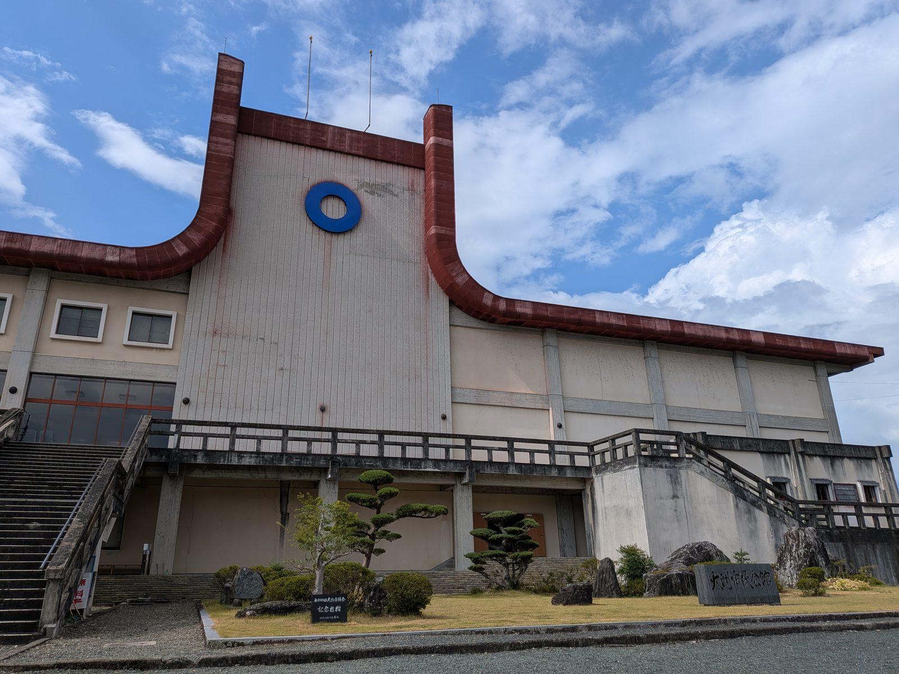

大洲のいま ・ 出典: 大洲市議会中継配信（YouTube）

これは大洲市議会が公開している中継動画（YouTube）の内容をもとにしている。
令和８年６月の定例会で、村上松平議員が建設中の大洲市民文化会館の事業費と財源について質問していた。
６月議会に計上された事業費は、建設工事費約62億8,000万円と工事管理業務委託料約１億2,100万円 （動画の22分５秒あたりから。リンクをクリックするとその位置から再生される）。
継続費として、合計約64億円が予算計上されている。
市の６月補正予算の概要を開くと、この64億円の内訳がそのまま載っていた。継続費の総額は64億100万円だ。
上の３つを足すと62億8,000万円で、議会答弁の「建設工事費約62億8,000万円」と一致する。数字はきれいにつながっている。
年度ごとの割り振り（年割額）も決まっている。令和８年度25億3,100万円、令和９年度13億300万円、令和10年度25億6,700万円。
事業期間は28か月を予定していて、３年度にまたがる大規模事業のため、年度ごとの事業費を明らかにした継続費が設定された。
６月補正で実際に計上されたのは25億3,921万６千円。うち工事請負費が25億1,200万円で、その中身は建築本体工事の前金払40％が16億7,028万円、電気設備工事が５億452万円、機械設備工事が３億3,720万円という内訳になっている。
着工時に工事費の４割を先払いするので、初年度の支出がいきなり大きくなる構造だ。
財源の内訳も答弁で示されていた（動画の22分25秒あたりから）。
７割近くが借金だ。15億円の国庫補助と４億7,800万円の貯金崩しでは、64億円のうち３割ほどしか埋まらない。
残りは市債を発行して、これから何十年かけて返していくことになる。
市側は「他の公共施設整備の時期が重ならないよう調整しており、健全な財政運営の指針の枠内に収まる計画」と説明していた。
根拠として挙げられていたのが財政指標だ。実質公債費比率は令和６年度決算で8.3％で、前年度から0.1ポイント上昇している。
市の過疎地域持続的発展計画に載っている数字を見ても、この比率は平成22年度の18.5％から大きく改善してきた経緯がある。
借金を返す余力を作ったうえで、次の大型事業に踏み出したという順序にはなっている。
令和７年度の決算見込みでは、一般会計の実質単年度収支が黒字に転じたことも報告された。
いまの市民会館と、新しくできる場所を地図で確認した。
現在の大洲市民会館は、大洲市大洲891番地の１。肱川の南、大洲城や城下町に近い側だ。
昭和43年の整備から58年が経ち、施設・設備の老朽化が進んでいる。
新しく建つのは、大洲市東大洲198他。旧ＪＡ愛媛たいきの本店跡地にあたる。
２つを見比べると、肱川をはさんで南から北へ、街の中心が動くのが分かる。
新しい場所はマルナカ大洲店やＪＡたいきの本店に近いエリアで、現在地からは車で５分ほど。
伊予大洲駅や国道56号にも近く、「歩いて行く場所」から「車で行く場所」への移転という性格が強い。
ひとつ補足しておくと、この土地には別の記事とのつながりがある。
ＪＡ愛媛たいきのディスクロージャー誌の令和６年度決算の説明に、「本支所機能再編に伴う旧本所土地の売却等もありましたが」という一文がある。
買い手が市だとまでは書かれていないので断定はしないが、時期も場所も符合している。
ＪＡの決算を押し上げた土地の売却と、市が64億円をかける新しい文化会館の建設地は、同じ場所を指している可能性が高い。
工事期間は約28か月（２年４か月）。完成は令和11年１月ごろ、オープンは令和11年の夏から秋を目指すという。
いまから３年後だ。市の一般会計が年間約280億円から310億円の規模であることを考えると、 64億円という金額は、市の１年分の予算の２割を超える。それを３年に分けて投じる計算になる。
64億円という金額の大きさに、まず素直に驚いた。大洲市の予算規模からすると、かなり思い切った投資だと思う。
財源の内訳を見ると、国の補助金と借金と貯金を組み合わせて作っていることがよく分かる。
とくに７割が借金という構造は、これから何十年か市の財政に効いてくる。
昭和43年の建物を58年使ってきたのだから、次の建物も同じくらい長く使われるはずだ。
返し終わる頃にどんな建物になっているかまで含めて、追いかけていきたい。
この記事をサイトに掲載した日: 2026/08/18